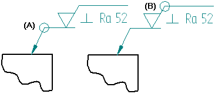
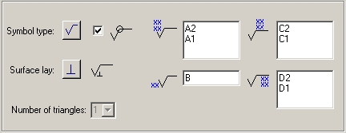
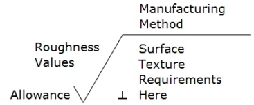
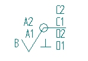
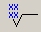
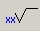
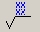
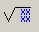
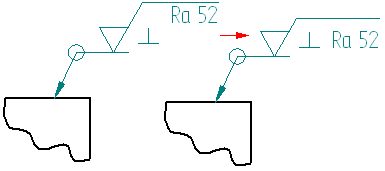

General page (Surface Texture Properties dialog box)
The General page of the Surface Texture Symbol Properties dialog box is where you select the appropriate symbol type, and then specify the characteristics and applications of these surface finish qualities: roughness, waviness, and lay.
- Saved Settings
-
Specifies the name for a new saved setting. Selecting the arrow lists the previously saved setting names.
Saved settings enable you to save content and formatting properties. You can apply saved settings to quickly format new surface texture symbols and to modify existing surface texture symbols.
Note:In documents where saved settings were created and saved prior to Solid Edge 2023, the legacy saved setting names are marked by an asterisk (*). To make changes to legacy saved settings, you must rename them and then save them. You then can delete the names with the asterisks. For more information, see Working with *legacy annotation saved settings.
- Save
-
Saves the information in the Symbol type, All around symbol, Symbol content, Surface lay, Number of triangles, Compress symbol for single surface texture requirement, and All around symbol with leader boxes to the name displayed in the Saved settings box.
- Delete
-
Deletes the saved setting information associated with the name currently displayed in the Saved settings box.
Note:Saved settings are saved to text files in the \Program Files\Siemens\Solid Edge 2023\Template\Reports folder, so that you can share these files with other users. The text files are named for the annotation type, for example, DraftFCF.txt, DraftSTS.txt, and DraftEdgeCondition.txt.
- Symbol Type
-
Sets the basic surface texture symbol type. Hover over each symbol to see its description. You can use the other options to modify the basic symbol.
- All Around Symbol
-
Specifies that the all around symbol is displayed. You can use the All around symbol with leader option to specify whether the all around symbol is displayed on the leader line (A), or the surface texture symbol (B).

- Surface Lay
-
Sets the surface lay type. Click the Surface Lay button, then pause the cursor over each symbol designation to see its description.
- Symbol Data Entry Fields
-
Type the surface quality specifications in the symbol data entry fields. Three of the four data entry fields allow multi-line text: roughness, manufacturing method, and surface texture requirements. To start a new line within one of these fields, press the Enter key. To move the cursor to the next field, press the Tab key.
The surface quality data entry fields are illustrated here. Symbol text appears on the drawing exactly as it is entered in the dialog box fields. For example:




Roughness Values (multi-line field)-
(A2) Sets the maximum roughness value.
(A1) Sets the minimum roughness value.
Enter additional lines of information as needed. To display a maximum value but not a minimum value, type the maximum value then press the Enter key to insert a blank line. To display a minimum value only, press the Enter key to insert a blank line, then type the minimum value.

Allowance-
(B) Sets the machining allowance value. This is not a multi-line field.

Manufacturing Method (multi-line field)-
(C1, C2, etc.) Adds one or more lines of manufacturing or production method specifications above the horizontal line. As you insert new lines, the text above the line moves up.

Surface Texture Requirements (multi-line field)-
(D1, D2, etc.) Adds surface texture requirements in one or more lines below the symbol horizontal line. As you insert new lines, the height of the symbol adjusts to the amount of text entered under the line.
- Number of Triangles
-
Specifies the number of triangles you want to place. This option is only available when the JIS Triangle symbol type is selected.
- Compress Symbol for Single Surface Texture Requirement
-
Compresses the height of the symbol when a single line of text is entered.

- All Around Symbol with Leader
-
Displays the all around symbol on the surface texture symbol leader line (A) when set. When cleared the all around symbol is displayed on the surface texture symbol (B).
- Show this dialog when the command begins
-
When set, displays the Surface Texture Properties dialog box automatically when you select the Surface Texture Symbol command. When cleared, you have to use the Properties button on the command bar to open this dialog box.
The default is to show the dialog box.